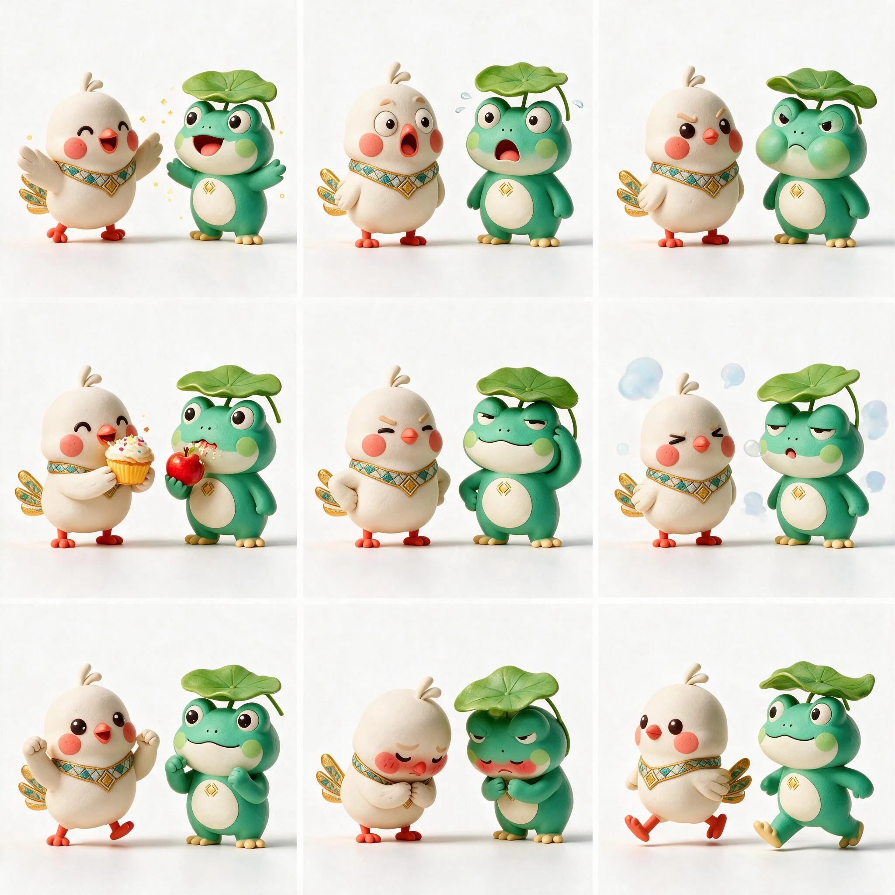

把文化玩出来Play the culture
出海小游戏 · IP 表情包Mini Game & Sticker Pack
出海之路不总是一帆风顺。控制甘米米飞跃海洋，收集黎锦纹样，躲开乌云——终点有呱噜噜等你。游戏由网页代码原生实现，无需下载，随时可重开。The road abroad is not always smooth. Fly Ganmimi across the sea, collect brocade motifs and dodge clouds — Gualulu is waiting at the finish. The game is coded natively in this page — no downloads needed, restart anytime.
IP 表情包 · 一个表情胜过千言万语Sticker Pack · One Face Says It All
开心、惊讶、生气、贪吃、得意、犯困、加油、害羞、出发——九个表情，一对活宝，每个都有一段小故事。点下面的链接可以逐个查看并下载。Happy, wow, grumpy, yummy, proud, sleepy, go, shy and let's go — nine faces, one silly duo, each with its own little story. Visit the sticker page to view and download them one by one.
进入表情包页 · 逐个查看与下载 →Sticker page · view & download each →
